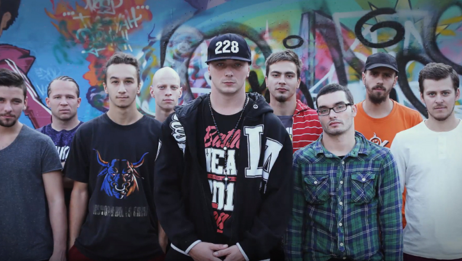
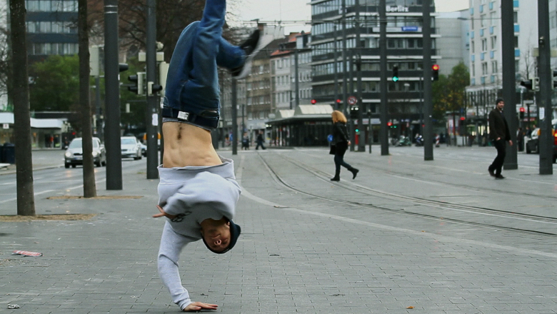

Press
interview
Press
ScreenDaily Review - "Here and Now"
Hip-hop drama set in an Israeli slum is an engaging debut from Roman Shumunov
“A modest, engaging, slice-of-life film”
ScreenDaily
Hungary Newspaper - "Babylon Dreamers"

A review of Babylon Dreamers, winner of the Budapest International Documentary Festival 2018 and interviews with actors and the director about hidden part of Israeli society and the hip hop scene in periphery.
“The Thriving Hip Hop Scene of Babylon”
Hungary Newspaper
JERUSALEM POST - "Babylon Dreamers"

The protagonists of “Babylon Dreamers” are very much on the fringes of Israeli society. Article for award winning documentary "Babylon Dreamers" by Roman Shumunov
“The Russian underground”
JERUSALEM POST
ISRAEL TODAY
"Babylon Dreamers' will not leave a dry eye in the audience" by Israel Today.
ISRAEL TODAY
CITY MOUSE
“Despair seems more convenient than ever”
CITY MOUSE